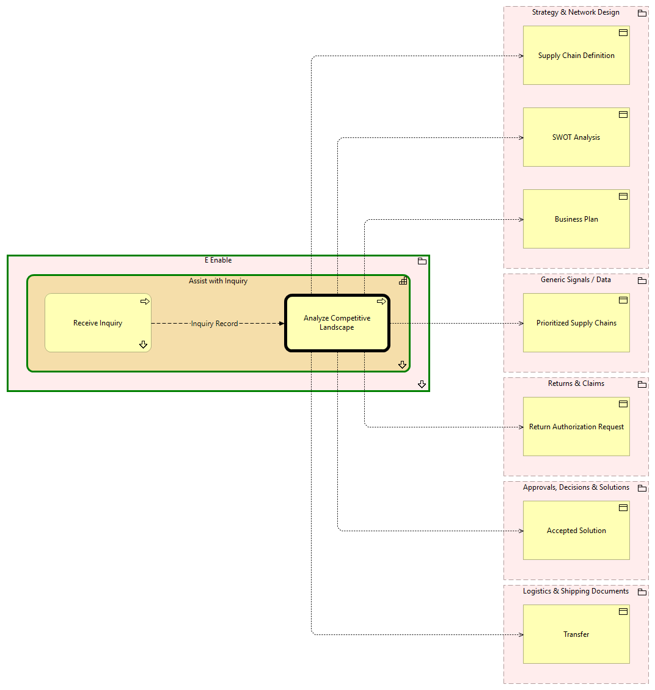

Analyze Competitive Landscape - Context
(
)

generated_by
build_archi_xml.py::gen_proc_node_context_view
generator_path
pedro/capabilities/build_archi_xml_assign/build_archi_xml_assign.py
run_at
2026-10-10T17:56:17
view_type
process_context
E Enable
Assist with Inquiry
Receive Inquiry
Receive Inquiry - Context
Analyze Competitive Landscape
Assist with Inquiry - Processes
E Enable - Processes
Strategy & Network Design
Business Plan
SWOT Analysis
Supply Chain Definition
Generic Signals / Data
Prioritized Supply Chains
Returns & Claims
Return Authorization Request
Approvals, Decisions & Solutions
Accepted Solution
Logistics & Shipping Documents
Transfer
Inquiry Record
Receive Inquiry
Analyze Competitive Landscape
Analyze Competitive Landscape
Business Plan
Analyze Competitive Landscape
Prioritized Supply Chains
Analyze Competitive Landscape
Return Authorization Request
Analyze Competitive Landscape
SWOT Analysis
Analyze Competitive Landscape
Accepted Solution
Analyze Competitive Landscape
Supply Chain Definition
Analyze Competitive Landscape
Transfer